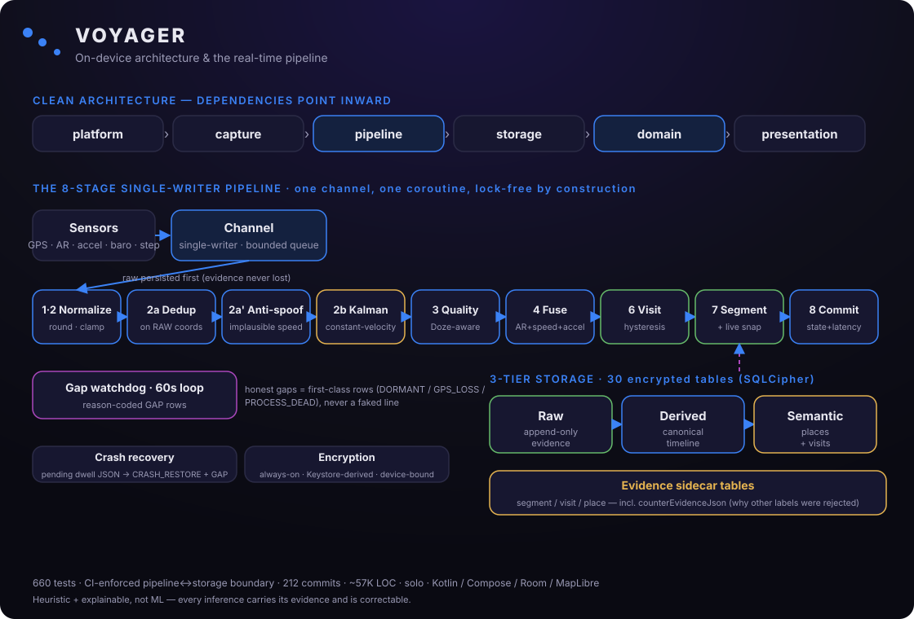

The hard part of a location timeline isn't the UI — it's turning a noisy GPS stream into a truthful, explainable record, in real time, on a battery-constrained phone that the OS is actively trying to put to sleep. This page walks through how Voyager does it, and the decisions behind it.
Clean layers with dependencies pointing strictly inward — so the core logic stays testable and portable.
Voyager is organised as concentric layers — platform (Android services, receivers, background jobs) and capture (the sensors) on the outside; pipeline (filtering and inference) and storage in the middle; domain (models, use-cases, and repository interfaces) at the centre; and presentation (all Jetpack Compose) on top. The rule that keeps it honest: source dependencies only point inward. The domain depends on nothing; the data layer implements the domain's interfaces; the UI talks to use-cases, never to the database.
That boundary costs some mapping boilerplate — but it buys real things: the whole inference core can be unit-tested without an emulator, the storage layer could be swapped or lifted onto another platform, and a new engineer can reason about one layer at a time. Dependency injection (Hilt) wires it all together, so nothing reaches across a layer to grab a concrete class.
Every GPS sample flows through a series of stages on one coroutine draining one channel — so the stages hold their state with no locks, and whole classes of race conditions simply can't happen.

The order matters — filtering happens in a deliberate sequence, and inference runs before segmentation so that stops don't get fragmented.
Because the channel is single-writer, the filter, the deduplicator, the segmenter, and the visit machine can all hold mutable state without synchronisation — correctness comes from sequential processing, which is both simpler and faster than fine-grained locking. It also survives being killed mid-visit: the in-progress dwell is persisted, so on restart the app inserts a gap for the dead window and resumes cleanly.
Each is a deliberate heuristic — chosen to be explainable and correctable rather than a black box. (Conceptual overview; the exact tuning stays in the private source.)
Decides in real time when you've genuinely arrived somewhere, are dwelling, and have left.
Raw GPS jitters, so a naïve "am I inside the radius?" creates phantom arrivals and departures, and inflates how long you stayed.
An online state machine with entry/exit hysteresis and a "first-stable" arrival anchor (so walking up to a place isn't counted as being there). The recorded departure is the last moment you were truly inside — so dwell times stay honest.
Turns coordinates into a name you recognise, and never states a wrong address as fact.
Free geocoders disagree and have thinner POI coverage than Google; a confident-but-wrong house number is worse than an honest approximation.
A name-priority chain (your name → your category → a trusted provider → "Near [neighbourhood/street]" → coordinates) plus an accuracy gate that coarsens the label to only the precision the evidence supports. Agreement across providers raises trust.
Turns the noisy fix stream into a smooth path with stable speed and a heading that's usable even when you're barely moving.
Raw GPS scatters by metres and can't give a reliable bearing at low speed; a moving average lags and smears corners.
A constant-velocity Kalman filter in a local flat-earth frame, with a numerically-stable (Joseph-form) covariance update so it stays healthy across long multi-day sessions, and re-anchors its reference on very long trips.
Rejects injected/fake locations that Android's own flag doesn't catch.
The mock-location flag only catches the official API; rooted-device injectors feed coordinates without it.
A physics check — a jump implying a speed no real device could reach is treated as a teleport and dropped, before the smoother. Deliberately conservative, so genuine flights and normal jitter never trip it.
Decides whether you're still, walking, driving, cycling, or on transit.
Speed alone is ambiguous — a bus and a car look identical, and a desk shuffle can mimic a jog.
Fuses the OS activity signal, filtered speed, step cadence, and an orientation-independent accelerometer-vibration signal. Every label is a weighted fusion — always explained and correctable, never a single sensor's verdict.
Keeps place trust fresh: recent, recurring places rank high; abandoned ones fade.
A place confirmed long ago shouldn't out-rank the café you visit every week just because it's older.
Pure decay-with-grace functions, where a place's repeatability (its recent and lifetime visit rhythm) lengthens its grace period and raises the floor it can decay to.
Turns detected drives into a tax-classifiable, evidence-backed log with fuel cost and CO₂.
A mileage log has to be defensible and arithmetic-exact — a rounding error is a real problem.
Pure math over classified drives: conservative emission factors, efficiency normalised across units, and money summed in integer minor units to avoid float drift. Each row carries the GPS evidence behind it.
Live and saved run/ride/hike stats that match what an athlete watched on the screen.
Standing at a light shouldn't dilute your pace, and GPS/altitude jitter shouldn't invent phantom climb.
Auto-pause on the moving-time clock, an accuracy gate on distance, and elevation smoothing (hysteresis) — with the live recorder and the save-time summariser sharing the same rules so the numbers reconcile exactly.
Voyager stores why next to what. That's the whole trust story, in the schema.
Raw samples are append-only and never mutated — the evidence base. Derived tables (movement segments, routes) are the canonical timeline. Semantic tables (places, visits) are the stable, human-meaningful layer. Facts flow one way; nothing downstream rewrites the raw record.
Every visit, segment, and place has a dedicated evidence table carrying the metrics behind the inference — including counter-evidence: why the competing labels were rejected. That's what lets the UI explain a "Walking" label and show why "Cycling" was ruled out. No competitor exposes this.
A missing schema migration throws in development rather than ever silently wiping a real user's database. The pre-release migration chain was deliberately collapsed to a clean baseline once there were no production databases to migrate — iteration, plus the judgement to throw away scaffolding.
Place, visit, segment, and route IDs are distinct value-class types — compile-time safety (you can't pass a visit id where a place id is expected) at zero runtime cost. Small touches like this are what keep a large codebase from rotting.
Fewer moving parts, deliberately placed.
Exactly one owner each for tracking lifecycle, for runtime state, and for the hot pipeline. Concentrating writes removes the "who's the source of truth?" failure mode before it can happen.
The hot path is lock-free because it's single-writer; the only locks are the handful of places where two coroutines genuinely meet — each one justified in a comment, not sprinkled defensively.
The database is encrypted at all times (SQLCipher); the key is derived from a hardware-backed Android Keystore key that never leaves the device, and the file is excluded from cloud backup. There is no unencrypted mode.
Four things that don't come standard anywhere else.
Every inference explains itself, counter-evidence included.
Missing data is shown as a reason-coded gap, never faked.
Encrypted on device; no cloud, no account, no broker.
Memory, proof, and habits from a single timeline.
The unglamorous work that separates a project from a product.
A synthetic pipeline-invariant test drives the real segmenter over a full synthetic day and asserts the invariants hold — the safety net for any refactor. A concurrency test proves concurrent updates don't lose writes. The mileage math is asserted to the exact figure. 660 tests in all.
A test fails the build if the pipeline layer ever imports the storage layer — the architecture boundary is machine-checked, not just a convention. Both product flavors are built and tested on every PR, and a monthly scan flags any vulnerable dependency.
The interesting part of engineering is what you chose not to do.
Visit-first → stream-first → hybrid. The first engine detected stops and then guessed the movement between them — laggy live UI, and gaps hard to reason about. The rewrite streamed the raw samples and inferred state live. But research showed a pure stream-first model splits "stop truth" across layers and ends up hiding duplicates at render time. The shipped design is a deliberate hybrid — durable, canonical stops; segment-first movement and gaps; a live in-memory layer for the UI. Changing my mind twice, on evidence, to land on the nuanced answer is the decision I'm proudest of.
A storage seam. The pipeline package imports no database types at all — it talks to a thin interface. That keeps the inference core pure and portable, and concentrates the one place that needs an atomic transaction. It's enforced by the CI boundary test above.
Heuristic, not ML — on purpose. Google and Arc have years of labelled data and trained models; Voyager won't win on raw inference accuracy. It wins by being explainable, private, and bundled — and every inference is correctable, which a black box can't be.
A few of the hard problems — the kind that don't show up in a feature list.